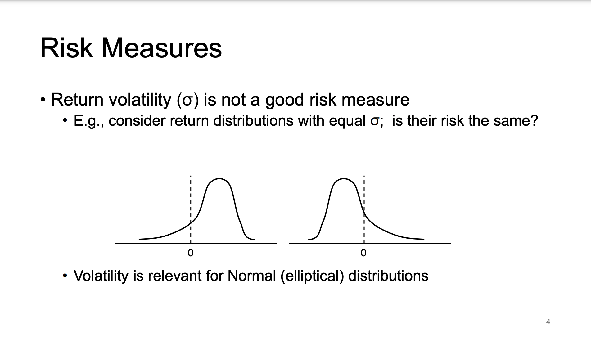
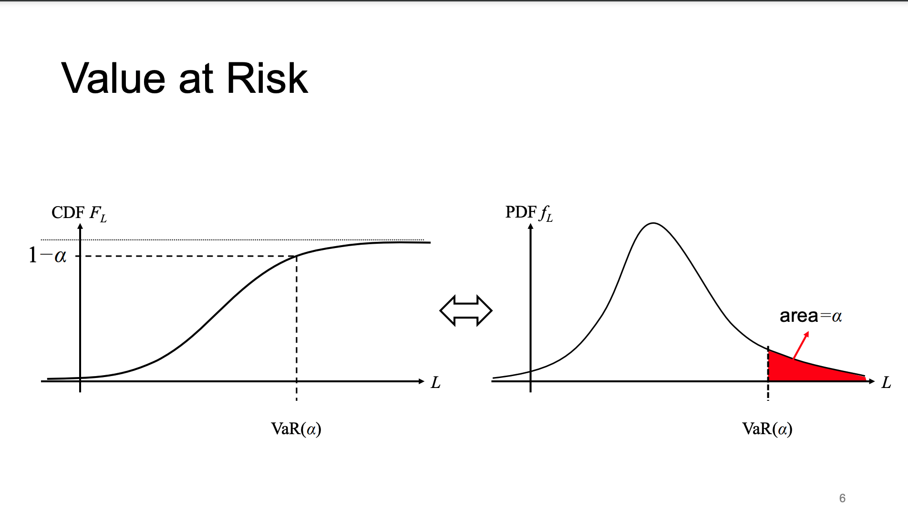
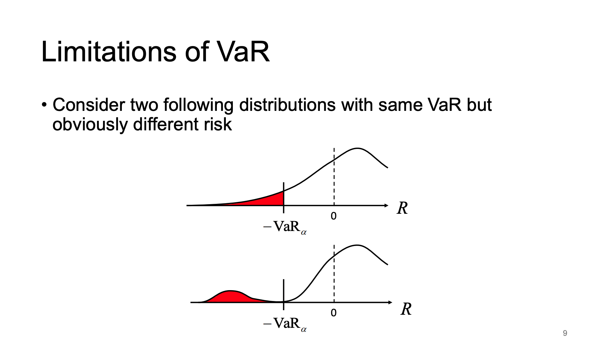
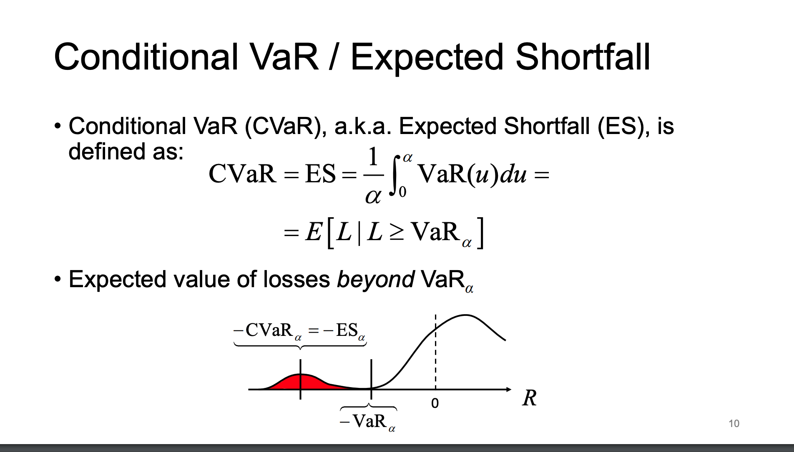
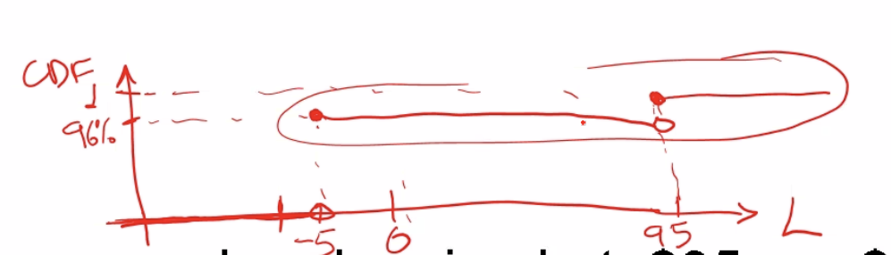
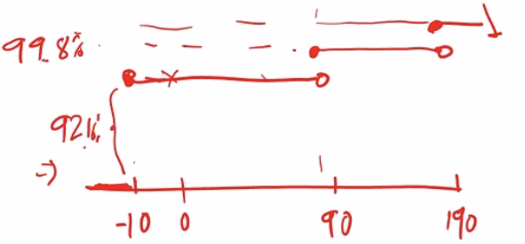

Chapter 9 Risk Measures
We will primarily focus on market risk.
Financial risk describes the possibility of an investment losing money. It can have several sources, the main ones being:
- Market risk: due to changes in market prices
- Credit risk: counterparty doesn’t honor obligations
- Liquidity risk: lack of asset tradability
- Operational risk: from organization’s internal activities
- E.g., legal, fraud, or human error risk
- Risk management is the process of identifying, measuring, and controlling risk
The first thing we want to do is quantify the risk somehow.
To operationalize risk management, we use risk measures to define some capital requirement that the organization should hold in a liquid asset/cash.
The first thing that comes to mind is measuring risk by the variance of returns. But it is not a good risk measure. In the following example, the variances are the same, but clearly the risk is different.
WIth the left distribution, the long tail goes to the left which means your returns could become large negative values. (Reasonable to assume it is “more risky”)
For the right distribution, the average return is negative although there is no chance of very large negative returns. (Implies that it is “less risky”)

The point of risk mgmt: We want to know the amount of money we should set aside to cover expected losses.
9.1 Formulas
Assuming \(Port \sim N(\mu, \sigma^{2})\) \[ \begin{aligned} VaR_{\alpha} &= \mu +z_{\alpha}\cdot \sigma\\ ES_{\alpha} &= \mu + \frac{\phi(z_{\alpha})}{\alpha} \cdot \sigma\\ EVaR_{\alpha} &= \mu + \sigma \cdot \sqrt{-2\ln(\alpha)} \end{aligned} \]
9.2 Value At Risk (VAR)
Was really common, although recently it has decreased in use (discredited) although there are variations still in use.
Let \(\mathrm{RV}\) \(L\) be the loss of an investment over some time period \(T\)
- Loss is negative of gain/revenue \((R): L=-R\)
We look at losses because we only capture the negative losses from this asset
Value at Risk at confidence level \((1-\alpha)\) & time horizon \(T\) is defined as the:
\((1-\alpha)\)-quantile of \(L\) for some \(\alpha \in(0,1)\)
\[ \begin{aligned} \operatorname{VaR}(\alpha)=\inf \{x: P(L \leq x) \geq 1-\alpha\}=\inf \{x: P(L>x) \leq \alpha\} \end{aligned} \]
Infimum (smallest value of x) is only used for discrete distributions such that the the probability of \(L\) will not exceed some value \(x\) and we want this to happen \((1-\alpha)\) of the time. (Usually want it to be less than \(5\%\))
- For continuous RV with \(\operatorname{CDF} F_L\) , we don’t need the infimum anymore and can just do: \(\Rightarrow \operatorname{VaR}(\alpha)=F_L^{-1}(1-\alpha)\)
Basically the quantile of the distribution
- VaR represents amount that covers losses with probability \((1-\alpha)\)

We want the quantile at which the probability is at \((1-\alpha)\)
The VaR(\(\alpha\)) value indicates what value of \(x\) we need to hold to cover our losses \((1-\alpha) = 95\%\) of the time.
9.2.1 Example
Consider asset with \(N(\mu=.03, \sigma^{2}=.04)\) annual log-returns. Find the 95% confidence level annual VaR for a \(S_{0} =\)$1000 investment in this asset. Let \(R=S_{T}-S_{0}\) represent revenue (-losses)
We want to find the VaR(\(\alpha\)) s.t \[ \begin{aligned} P(L > VaR) &= 5\%\\ &= P(-R > VaR) \\ &= P(R < -VaR)\\ \\ X &\sim N(0.03, \sigma^{2}=0.04)\\ \implies S_{T} &= S_{0}\cdot e^{X}\\ \\ P(S_{T}-S_{0} < -VaR) &= P(S_{T} < S_{0}-VaR)\\ &= P(S_{0}e^{X} < S_{0}\cdot VaR)\\ &= P\left( X < \log\left( \frac{S_{0}-VaR}{S_{0}} \right)\right)\\ &= P\left( \underbrace{ \frac{X-0.03}{.2} }_{ Z\sim N(0,1) } < \frac{\log\left( 1-\frac{VaR}{S_{0}} \right)-0.03}{.2} \right) = 0.05\\ &= P\left( Z < \underbrace{ \frac{\log\left( 1-\frac{VaR}{S_{0}} \right)-0.03}{.2} }_{ z } \right) = 0.05\\ \implies z &= -1.645\\ \frac{\log\left( 1-\frac{VaR}{S_{0}} \right)-0.03}{.2} &= -1.645\\ \\ \mathbf{VaR} &= (1-\exp\{-1.645\cdot 0.20+0.03\}) \cdot S_{0}\\ \mathbf{VaR} &= (1-\exp\{-0.299\})\cdot 1000\\ &= \mathbf{258.44} \end{aligned} \]
VaR is basic and widely used as a risk measure to simply indicate
“What is the most I can lose on this investment?”
It has been widely used partly because of the Basel framework which is some risk management standard for banks and banks implemented Basel to comply.
However it has some glaring issues. No one trusts it as a proper risk management tool.
Flaws: - VaR hides tail risk (hides risk of very extreme events) although there is a way to remedy it - It discourages diversification
The additional resources talk about why VaR is not a good measure of risk: [[../../Lectures/Risk Mismanagement.pdf]] [[../../Lectures/Against VaR.pdf]]
9.3 VaR hides tail risk

Var doesn’t care what happens beyond the cut off, just the actual z-score (or whatever score from some distribution). If we push some density of losses very far (hiding a small probability of really bad events), we can actually concentrate the density of profits higher.
9.3.0.1 Mitigation: Cond VaR or Expected Shortfall
AKA CVar or ES

This gives us the expected losses that can occur given that we are beyond \(VaR_{\alpha}\)
Imagine we cut off the loss distribution beyond the VaR(\(\alpha\))\(=x\) point, and we have another little distribution of losses which are way larger/further from the bulk of the distribution. We take the mean/average/expected value of this distribution which tells us “hey in the 5% scenario our losses are so huge, what can we expect to lose?”
9.3.0.2 Example
If \(R\sim N(0,1)\), find ES at confidence level \(\alpha\)
\[ \begin{aligned} R\sim N(0,1) &\implies L \sim N(0,1)\\ \text{Let } Z_{\alpha} &\text{denote the } \alpha \text{-quantile of the std normal}\\ \\ ES_{\alpha} &= \mathbb{E}[L|L>Z_{\alpha}] = \int ^{\infty}_{Z_{\alpha}} x \ \phi(x| L> z_{\alpha}) \, dx\\ &= \int ^{\infty}_{Z_{\alpha}} x \frac{\phi(x)}{\underbrace{ P(L > Z_{\alpha}) }_{ \alpha }}\, dx \\ &= \frac{1}{\alpha}\int ^{\infty}_{Z_{\alpha}} x \frac{1}{2\sqrt{ \pi }}e^{-x^{2}/2}\, dx \\ &= \frac{1}{\alpha} \int ^{\infty}_{Z_{\alpha}}\frac{1}{2\pi} \lfloor-e^{-x^{2}/2}\rfloor \, dx \\ &= \frac{1}{\alpha} \frac{1}{2\pi} \left[-e^{-x^{2}/2}\right]^{\infty}_{x=z_{\alpha}}\\ \implies ES_{\alpha} &= CVaR_{\alpha} = \frac{1}{\alpha}\frac{1}{\sqrt{ 2\pi }}e^{-z_{\alpha}^{2}/2}\\ &= \frac{1}{\alpha} \phi(z_{\alpha}) \end{aligned} \]
This means that generally for \(L\sim N(\mu, \sigma^{2})\), \[ \begin{aligned} ES_{\alpha} &= \mu + \frac{\phi(z_{\alpha})}{\alpha} \cdot \sigma\\ VaR_{\alpha} &= \mu +z_{\alpha}\cdot \sigma \end{aligned} \]
and for small \(\alpha\), \(\frac{\phi(z_{\alpha})}{\alpha} > z_{a}\) which implies \(ES_{\alpha}\geq VaR_{\alpha}\)
9.4 Risk Measure Properties
We now look at formal set of requirements for risk measures (5 properties)
We let \(\rho(L)\) represent the risk measure, which takes in a distribution of a some returns and outputs a number indicating the capital requirements (money to be kept aside) should be. We let \(L\) is a random variable and let \(\rho\) is a functional distribution of \(L\).
For this measure \(\rho\) to reasonably quantify risk, it must:
- be normalized \(\rho(0)=0\) (risk of holding no assets is 0)
- Translation invariance: \(\rho(L+c) = \rho(L) + c \ \forall c \in \mathbb{R}\)
- adding a loss \(c\) to the portfolio increases risk by exactly \(c\)
- Positive Homogeneity: \(\rho(bL) = b\rho(l)\)
- scaling portfolio returns also will scale risk
- Monotonicity: \(L_{1}\geq L_{2} \implies \rho(L_{1}) \geq \rho(L_{2})\)
- The ordering of the random variables is almost surely \(P(L_{1}\geq L_{2})=1\)
- Sub-additivity: \(\rho(L_{1}+L_{2}) \leq \rho(L_{1}+L_{2})\)
- Only when the two losses are perfectly correlated, then equal
- The risk of two combined portfolios cannot exceed the sum of the two portfolio risks
If a risk measure has all 5 properties, then it is called a coherent risk measure.
9.4.1 Example that VAR and CVar satisfy prop 2 & 3
We first show that VAR and CVaR satisfy the second and third property of translation invariance and positive homogeneity.
\[ \begin{aligned} VaR_{\alpha}(L) &= inf\{x:P(L>x) \leq \alpha\}\\ \\ \text{Let}\ \ L' &= bL+c\\ \implies VaR(L') &= inf\{x': P(L' >x') \leq \alpha\}\\ &= inf\{x':\mathbb{P}(bL+c > x') \leq \alpha\}\\ &= inf\left\{ x': \mathbb{P}\left( L> \frac{x'-c}{b} \leq \alpha \right) \right\}\\ &= inf\{bx+c : \mathbb{P}(L > x) \leq \alpha\}\\ &=b\cdot inf\{x: \mathbb{P}(L > x) \leq \alpha\}+c\\ &= b VaR(L)+c \end{aligned} \] \[ \begin{aligned} CVaR_{\alpha}(L) &= \frac{1}{\alpha}\int ^{\alpha}_{0} VaR_{u}(L) \, du\\ \implies CVaR_{\alpha}(L') &= \frac{1}{\alpha}\int ^{\alpha}_{0}(bVaR_{u}(L)+c) \, du\\ &= b\left( \frac{1}{\alpha} \int ^{\alpha}_{0}VaR_{u}(L) \, du\right) +c\\ &= b \cdot CVaR_{\alpha}(L)+c \end{aligned} \]
We will show that VaR is not sub-additive
Consider two risky zero-coupon bonds priced at $95 per $100 face value. If each one has 4% independent default probability, show that \(VaR_{5\%}\) is not sub-additive
\[ \begin{aligned} \text{Distribution of }L_{1/2} &= \begin{cases} -5 & w.p. 96\% \\ +95 & w.p. 4\% \end{cases}\\ \text{By definitioin, VaR} & = inf\{x: \mathbb{P}(L >x)<5\%\}\\ &= inf(x: \mathbb{P}(L \leq x)\geq 95\%)\\ \implies VaR_{5\%}(L_{1/2}) &= -5 \\ \end{aligned} \]
As -5 is the smallest value that satisfies \(\mathbb{P}(L\leq x) \geq 95\%\) as \(\mathbb{P}(L \leq -5) = 96\%\)

\[ \begin{aligned} \text{Distribution of }L_{1} + L_{2} &= \begin{cases} -5-5 = -10 \quad w.p. 96\%^{2}=92.16\% & \text{when both don't default}\\ -5+95 = 90 \quad w.p. 96\% \cdot 4\% = 7.68\% & \text{when only one defaults} \\ 95+95=190 \quad w.p. 4\%^{2}=.16\% & \text{both default} \end{cases}\\ VaR_{5\%} (L_{1}+L_{2}) &= inf\{x:\mathbb{P}(L_{1}+L_{2} < x) \geq 95\%\} = 90 \end{aligned} \]

\[ \begin{aligned} \implies VaR_{5\%}(L_{1}+L_{2}) = 90 > VaR_{5\%}(L_{1}) + VaR_{5\%}(L_{2}) = -5 -5 = 10 \end{aligned} \]
Which suggests holding both bonds is more risky than holding them separately.
We can show that CVaR is sub-additive.
\[ \begin{aligned} CVaR_{5\%}(L_{1}) &= \frac{1}{\alpha}\int ^{\alpha}_{0}VaR_{u}(L_{1}) \, du\\ &= \frac{1}{5\%} (95\cdot 4\% + (-5)\cdot 1\%) = 73\%\\ CVaR_{5\%}(L_{1}+L_{2}) &= \frac{1}{5\%}\int ^{5\%}_{0}VaR_{u}(L_{1}+L_{2}) \, du\\ &= \frac{1}{5\%}[190\cdot.16\%+90\cdot 4.84\%] = 93.2\\ \\ \implies CVaR_{5\%}(L_{1}+L_{2}) &= 93.2 \leq CVaR_{5\%}(L_{1})+CVaR_{5\%}(L_{2})\\ &= 2\cdot 73 = 146 \end{aligned} \]
9.5 Entropic VaR
A coherent alternative to VaR based on the Chernoff bound for tail probability
For positive RV \(X\), the Chernoff inequality gives: \[ P(X\geq c) \leq \frac{\mathbb{E}(x)}{c} \quad \forall c > 0 \] For loss RV \(L\) with mgf \(M_L(z)=E\left[e^{z L}\right]<\infty, \forall z>0\) we have \(P(L \geq c) \Leftrightarrow P\left(e^{z L} \geq e^{z c}\right) \leq M_L(z) e^{-z c}\) Limiting bound to \(M_L(z) e^{-z c} \leq \alpha\) and solving for \(c\) we get \(c=z^{-1} \ln \left(M_L(z) / \alpha\right)\)
EVaR defined as: \(\mathrm{EVaR}_\alpha=\inf _{z>0}\left\{z^{-1} \ln \left(M_L(z) / \alpha\right)\right\}\)
Can define a risk measure we can use the MGF instead of the PDF or CDF which in some cases is convenient. We can just minimize the MGF
9.5.1 EVaR for a Normal Distribution
\[ \begin{aligned} \text{Let } L &\sim N(\mu, \sigma^{2})\\ M_{L}(z) &= e^{\mu z+1/2 \sigma^{2}z^{2}} = \mathbb{E}[e^{z\cdot L}]\quad \forall z\\ \\ \text{Know: }EVaR_{\alpha} &= inf_{z>0} \left\{ z^{-1} \ln(M_{L}(z) / \alpha) \right\}\\ \text{Let } f(z) &= z^{-1} \ln(M_{L}(z) / \alpha)\\ &= z^{-1} \ln(e^{\mu z+1/2 \sigma^{2}z^{2}} / \alpha)\\ &= \frac{1}{z}\left[ \mu z+\frac{\sigma^{2}z^{2}}{2}-\ln \alpha \right]\\ &= \mu + \frac{z\sigma^{2}}{2} - \frac{\ln(\alpha)}{z}\\ \end{aligned} \] \[ \begin{aligned} \text{So to find }& \text{the smallest $z$, we take the derivative:}\\ \implies f'(z) &= \frac{\sigma^{2}}{2}+\frac{\ln(\alpha)}{z^{2}}\\ \implies z &= \frac{\sqrt{-2\ln(\alpha)}}{\sigma}\\ \\ \implies EVaR_{\alpha}(L) &= \mu + \frac{\sigma^{2}}{2}\cdot \frac{\sqrt{-2\ln(\alpha)}}{\sigma} - \frac{\ln(\alpha)}{\frac{\sqrt{-2\ln(\alpha)}}{\sigma}}\\ &= \mu + \sigma \cdot \sqrt{-\frac{\ln(\alpha)}{2}} + \sigma \frac{\sqrt{(-\ln(\alpha))^{2} }}{\sqrt{-2\ln(\alpha)}}\\ &= \mu + \sigma \cdot \sqrt{-\frac{\ln(\alpha)}{2}} + \sigma \underbrace{ \frac{\sqrt{(\ln(\alpha ^{-1}))^{2} }}{\sqrt{2\ln(\alpha ^{-1})}} }_{= \sqrt{ \frac{\ln(\alpha ^{-1})}{2} } = \sqrt{ -\frac{\ln(\alpha)}{2} }}\\ &= \mu + 2\sigma \cdot \sqrt{-\frac{\ln(\alpha)}{2}}\\ &= \mu + \sigma \cdot \sqrt{-2\ln(\alpha)}\\ \end{aligned} \]
9.6 Calculating Risk Measures
- Parametric Modelling
- Not used because theres usually no closed form distribution for the losses
- Historical Simulation
- Not favoured because past performance does not predict future performance
- Monte Carlo Simulation
- 85% of large banks use historical simulation, while the remaining use MC simulation
- Usually done by sampling from some estimated parametric model for individual assets
Other ways to test are stress-testing (the worst case scenario) and use the Extreme Value Theorem
Rest of the slides were not gone over in detail, just showed how the CVaR performed better than VaR (gave lower z-score -> allocation more money for risk purposes), how parametric modelling can’t really be done, how time series models are independent over time but can correlate between assets and show volatility clustering, how RiskMetrics is a time series model but didnt get into it, and the fact GARCH models are used.